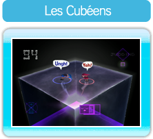
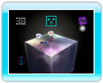

5 |
Bienvenue! |
 |
|
● Qu’est-ce que You, Me, and the Cubes?

Les Cubéens sont de mystérieuses créatures qui ressemblent un peu aux humains.
YOU, ME, AND THE CUBES est un jeu dont le but consiste à créer de petites créatures, les Cubéens, et à les lancer sur des cubes tout en maintenant l’équilibre. Pour terminer un niveau, vous devez placer un nombre prédéfini de Cubéens sur une structure composée de cubes de plus en plus complexe.
● Principe du jeu
La règle de base du jeu consiste à placer un nombre prédéfini de Cubéens sur des cubes. Les structures penchent sous le poids des Cubéens. Il est donc essentiel de préserver l’équilibre de l’ensemble pour empêcher que les Cubéens ne sombrent dans le néant.
・
Placer des Cubéens sur les cubes
Pour créer des Cubéens, agitez deux fois la manette Wii Remote de haut en bas. Ensuite, utilisez le curseur pour viser les deux emplacements où vous souhaitez placer vos Cubéens. Enfin, agitez la manette Wii Remote vers le bas pour lancer chaque Cubéen sur la structure.

Créez des Cubéens, visez les emplacements où vous souhaitez les lancer, puis appuyez sur

Agitez la manette Wii Remote vers le bas pour lancer vos Cubéens.
|
 |
 |
 |